PART 03Files and locations
3.1 Application root tree (live Windows path)
C:\inetpub\wwwroot\Web_Mail_System\
├─ admin\ dashboard, users, edit-user, create-user, logs, spam-reports, registrations
├─ app\
│ ├─ Controllers\ AdminController, AuthController, ContactController, EmailController
│ ├─ Models\ Attachment, Contact, Email, User
│ └─ Services\ AuthService, MailService, AttachmentService, AccountService,
│ OrganizationService, ScheduledMailService, SmtpTransport, SpamService
├─ assets\ css (style, tailwind, bootstrap-icons), icons, brand, js
├─ bin\ create-admin.php, process_scheduled.php,
│ configure-hotspot-ip.bat, configure-hotspot-ip.ps1
├─ config\ database.php, mail.php, auth.php, ldap.php
├─ database\ schema.sql, seed.sql, migrations\001..006
├─ docs\ SYSTEM_COMPREHENSIVE_AUDIT.md, flowcharts\, screenshots\, this guide
├─ includes\ auth.php, database.php, functions.php, header.php, footer.php
├─ public\ login, change-password, inbox, read, compose, drafts, sent,
│ scheduled, spam, trash, contacts, notifications, settings,
│ download, logout, index + api\ (theme, toggle_star, contacts, ...)
├─ storage\ attachments\, logs\, cache\ <-- ONLY writable app dirs
├─ tests\ 13 automated suites + unified runner
├─ .htaccess Apache parity hardening
├─ web.config IIS handler, request filtering, rewrite, headers
└─ index.php root dispatcher
dir C:\inetpub\wwwroot\Web_Mail_System.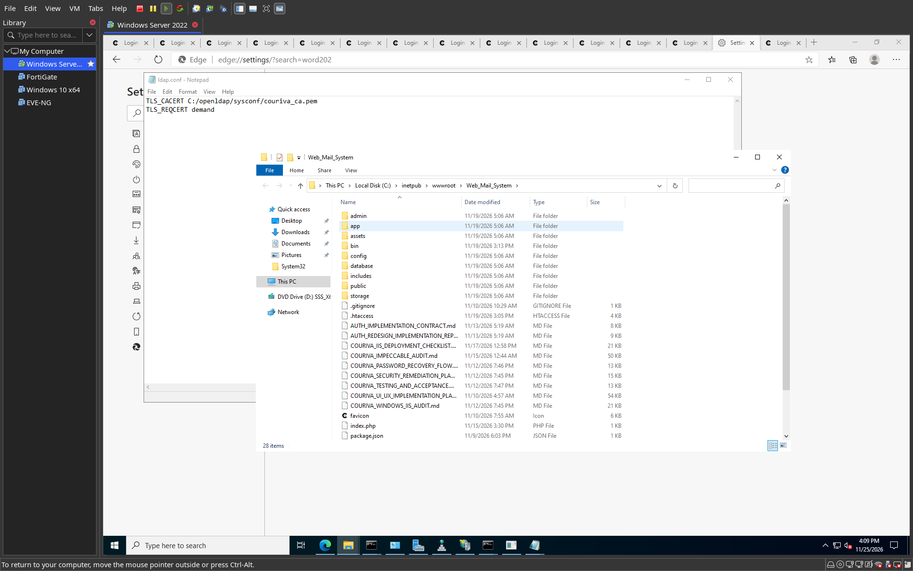
3.2 Sensitive paths — never web-reachable
config\, app\, includes\, database\, tests\, bin\, storage\, docs\, .git, .env are hidden segments in web.config:38-52; .sql, .log, .env, .ini, .bak, .md, .yml, .sh, .bat, .json, .lock, .drawio, .txt are denied extensions in web.config:55-72.
curl -s -o /dev/null -w "%{http_code}\n" http://172.20.10.2/config/database.php → 404.8-class denial (hidden segment). Figure 7 shows the same rules in IIS Manager.3.3 MVC and service layer map
| Layer | Class / File | Responsibility |
|---|---|---|
| Controller | AuthController | Login, logout, session regeneration, forced password change. |
| Controller | EmailController | Mailbox views (25/page), search, read thread, compose, send, delete. |
| Controller | ContactController | Personal contacts CRUD and autocomplete list. |
| Controller | AdminController | Admin dashboard metrics, user governance, logs, spam report rulings. |
| Model | User, Email, Contact, Attachment | PDO queries, PH phone validation, attachment metadata, folder/label lookups. |
| Service | AuthService | LDAPS bind, ad_object_guid sync, local break-glass fallback, password policy. |
| Service | MailService | Transactional compose/send, quota check, delivery status, batch actions. |
| Service | AttachmentService | finfo_file() MIME validation, 25 MB/50 MB limits, randomized storage. |
| Service | ScheduledMailService | Queueing, atomic claim, retry backoff, 10-min stale-job reclaim. |
| Service | OrganizationService | Custom folders, color labels, move/archive/snooze state updates. |
| Service | SpamService, AccountService, SmtpTransport | Spam report resolution, account status/epoch updates, optional SMTP transport. |
PART 04Windows Server build
4.1 Roles and features
Installed on the live guest: AD DS, DNS, IIS, File and Storage Services (Figure 1). Server Manager dashboard reports Roles: 4, Server groups: 1.
Install-WindowsFeature -Name Web-Server,Web-WebServer,Web-Common-Http,Web-Default-Doc,
Web-Http-Errors,Web-Static-Content,Web-Http-Redirect,Web-Http-Logging,Web-Filtering,
Web-Basic-Auth,Web-Windows-Auth,Web-CGI,Web-Mgmt-Tools,Web-Mgmt-Console -IncludeManagementTools
Where to click (Server Manager): Open Server Manager from the Start menu → click Manage (top right) → Add Roles and Features → choose Role-based or feature-based installation → check Active Directory Domain Services, DNS Server, and Web Server (IIS). Under Web Server → Application Development check CGI; under Security check Request Filtering; under Management Tools check IIS Management Console → click Install.
Get-WindowsFeature | Where Installed.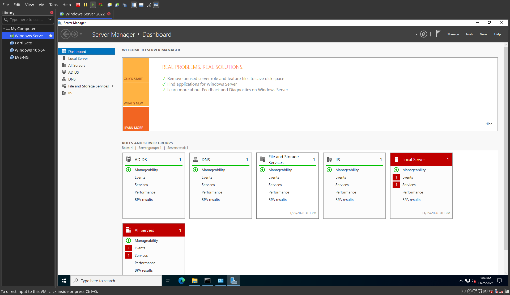
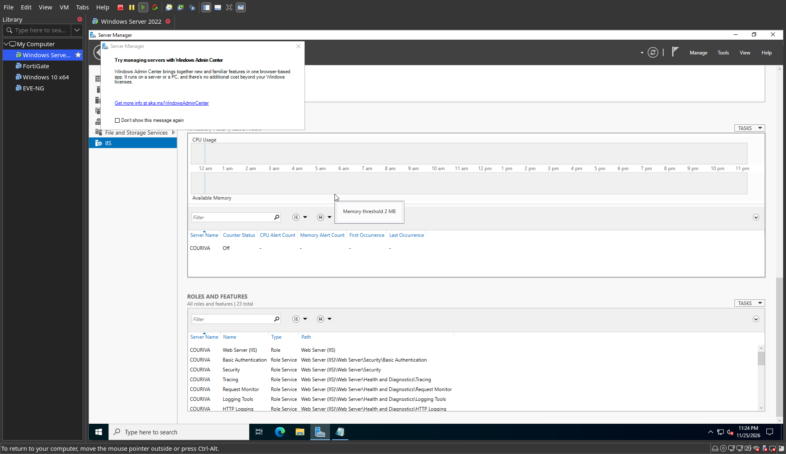
23 total). Live VM.4.2 IIS 10 site, pool, FastCGI
- Site
CourivaWebMail, bindingshttp *:80andhttps *:443(Figure 8). - Pool
CourivaPool: no managed code, Integrated,ApplicationPoolIdentity, no idle timeout, periodic restart disabled, 50,000 request recycle (Figure 5). - FastCGI:
C:\PHP\php-cgi.exe,maxInstances=0,instanceMaxRequests=10000,PHP_FCGI_MAX_REQUESTS=10000(Figure 6). Handler*.phpis declared beforeStaticFileinweb.config:26-32.
Where to click (IIS Manager — press Win+R, type inetmgr):
- Create App Pool: Expand the server node → click Application Pools → right-click → Add Application Pool → Name:
CourivaPool, .NET CLR:No Managed Code, Pipeline:Integrated. SelectCourivaPool→ Advanced Settings → set Identity toApplicationPoolIdentity, Idle Time-out to0, Regular Time Interval to0, and Request Limit to50000(Figure 5). - Create Website: Right-click Sites → Add Website → Site name:
CourivaWebMail, Application pool:CourivaPool, Physical path:C:\inetpub\wwwroot\Web_Mail_System(Figure 4). - Register FastCGI: Click the top server node → double-click FastCGI Settings → Add Application → Full Path:
C:\PHP\php-cgi.exe, Max Instances0, Instance MaxRequests10000, and addEnvironmentVariables(PHP_FCGI_MAX_REQUESTS=10000plusLDAP_*/DB_*) (Figure 6). - Verify Security & Bindings: Click
CourivaWebMail→ double-click Request Filtering to verify Hidden Segments and File Name Extensions (Figure 7) → click Bindings... in the right Actions pane to verifyhttp *:80andhttps *:443(Figure 8).


CourivaPool application pool. Live VM.
C:\PHP\php-cgi.exe, 10000 requests. Live VM.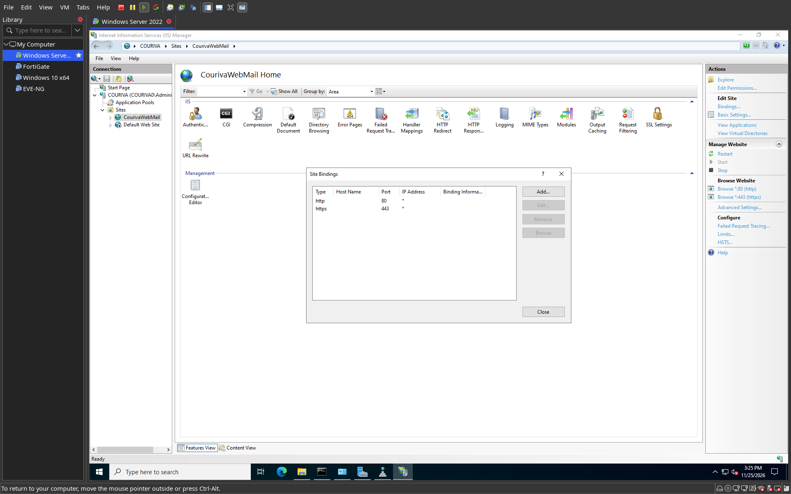
http :80, https :443). Live VM.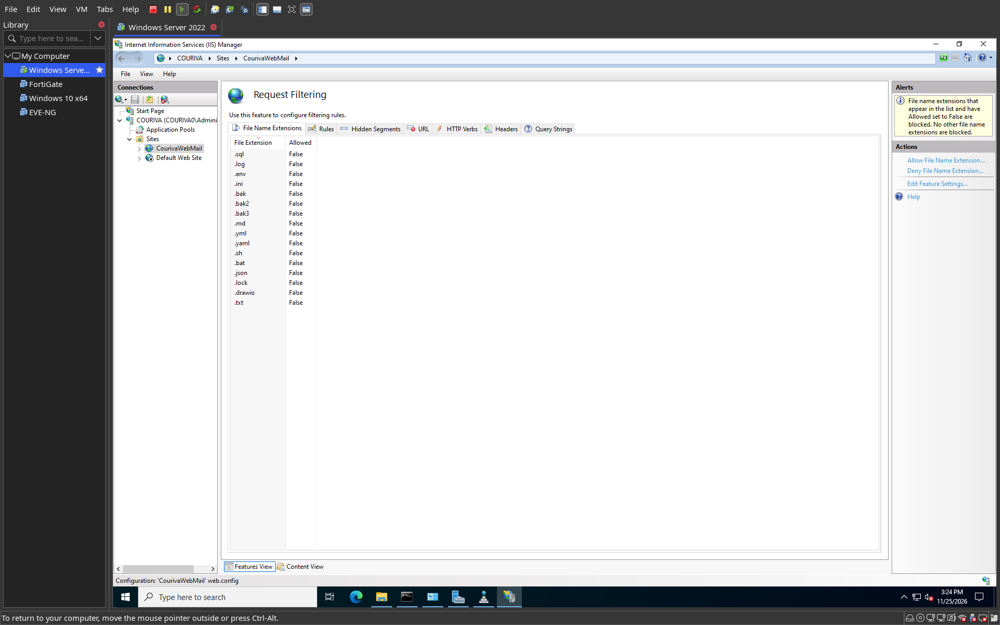
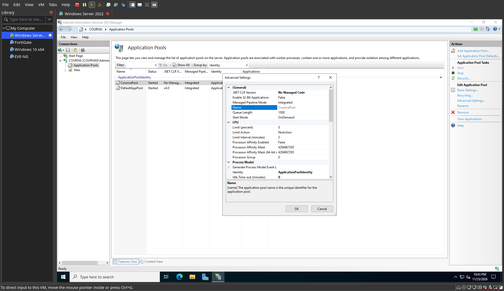
CourivaPool Advanced Settings (No Managed Code, Integrated, ApplicationPoolIdentity). Live VM.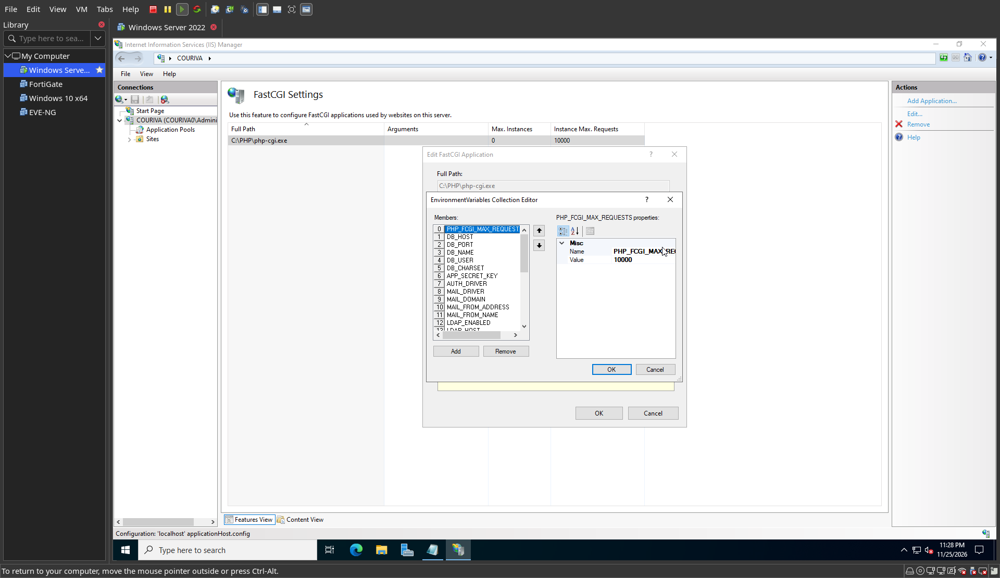
EnvironmentVariables Collection Editor (PHP_FCGI_MAX_REQUESTS, DB_*, LDAP_*). Live VM.4.3 DNS
Live DNS Manager shows forward zones _msdes.couriva.com and couriva.com; the couriva.com zone holds SOA, NS (couriva.couriva.com), and CNAME records (Figure 2). The hotspot script updates A records @, www, mail, couriva to 172.20.10.2.
Where to click (DNS Manager — Win+R → dnsmgmt.msc): Expand the server → Forward Lookup Zones → couriva.com → right-click inside the zone → New Host (A or AAAA)... or New Alias (CNAME)... to map @, www, mail, and couriva to the server IP.
Drift: repo and LDAP defaults reference couriva.local; live DNS AD domain is couriva.com.
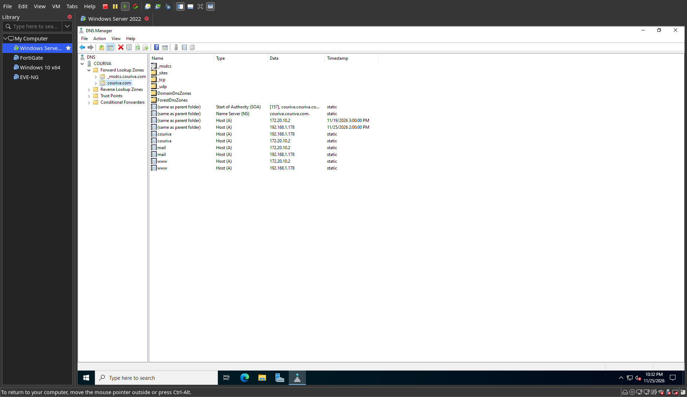
couriva.com forward lookup zone. Live VM.4.4 AD DS
ADUC shows OU CourivaUsers under couriva.com with demo domain users (edrich B. Bardilas, hrmar L. Centillas, John Doe, ryle P. pogi). LDAP_ALLOWED_OU_DN defaults to OU=CourivaUsers,DC=couriva,DC=local; on this host the equivalent live OU is OU=CourivaUsers,DC=couriva,DC=com. Figure 3.
Where to click (ADUC — Win+R → dsa.msc): Expand couriva.com → right-click → New → Organizational Unit → name it CourivaUsers. To add a member, right-click CourivaUsers → New → User (set logon name @couriva.com).
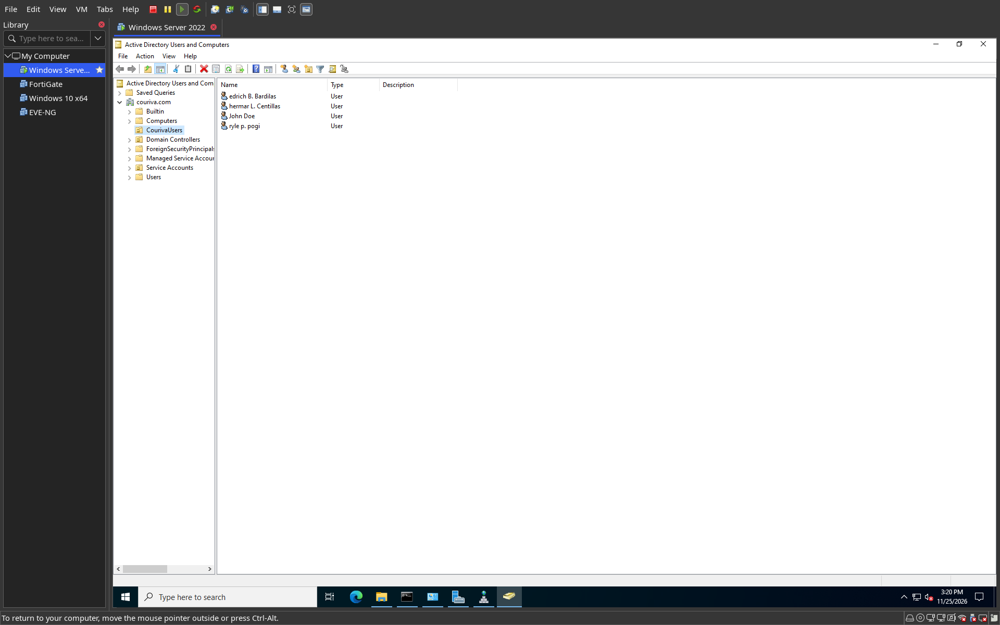
CourivaUsers OU. Live VM.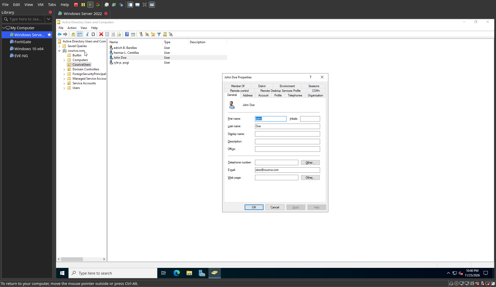
CourivaUsers user account properties (jdoe@couriva.com). Live VM.4.5 PHP
C:\PHP\php.ini (Figure 10): expose_php=Off, display_errors=Off, log_errors=On, error_log=...\storage\logs\php_errors.log, upload_max_filesize=64M, post_max_size=64M, extension_dir=C:\PHP\ext, extensions curl,fileinfo,mbstring,openssl,pdo_mysql,ldap, session name COURIVASESSID, cookie_httponly=1, cookie_samesite=Strict, gc_maxlifetime=28800. Session directory C:\PHP\sessions.

C:\PHP\php.ini in Notepad. Live VM.4.6 MariaDB
MariaDB 10.11.20; service on :3306; webmail database; @@datadir = C:\Program Files\MariaDB 10.11\data\ (Figure 16). my.ini sets utf8mb4, InnoDB, max_allowed_packet=64M.
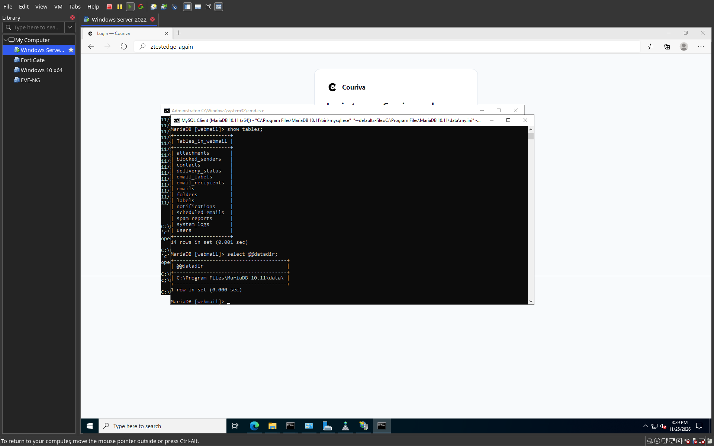
SHOW TABLES; (14 rows) and verified SELECT @@datadir;. Live VM.4.7 URL Rewrite and headers
web.config:80-118: HTTP→HTTPS (exempts localhost, 127.0.0.1, 172.20.10., 192.168., 10.), root→public/index.php, static allow-list for assets|public|admin, front-controller fallback. Headers at web.config:120-130: nosniff, SAMEORIGIN, Referrer-Policy, Permissions-Policy, HSTS, CSP. Live duplication documented in §10.6.
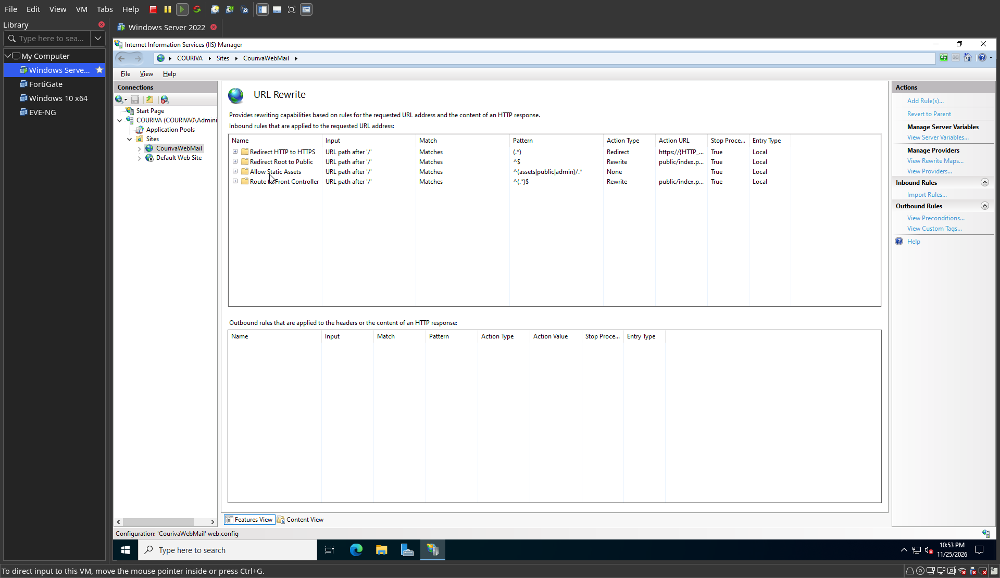
CourivaWebMail URL Rewrite inbound rules (HTTPS redirect, root redirect, static assets, front controller). Live VM.4.8 Certificates, ACLs, Task Scheduler, Event Viewer
- Trusted Root CA for LDAPS installed in Certificates MMC (Figure 13);
C:\openldap\sysconf\ldap.confpinsTLS_CACERTandTLS_REQCERT demand(Figure 11). - NTFS ACL matrix:
| Path | Rights | Account |
|---|---|---|
| app\, config\, includes\, public\, admin\, database\, assets\, bin\ | Read & Execute | IUSR, IIS AppPool\CourivaPool |
| storage\attachments\, storage\logs\, storage\cache\ | Modify | IIS AppPool\CourivaPool only |
| C:\PHP\sessions | Modify | IIS AppPool\CourivaPool; Full for Administrators/SYSTEM |
icacls "C:\inetpub\wwwroot\Web_Mail_System\storage\attachments".- Task
Couriva-ScheduledMailProcessor(Figure 14): actionC:\PHP\php.exe -f ...\bin\process_scheduled.php, trigger every 1 minute,MultipleInstances=IgnoreNew, 10-minute execution limit, principal SYSTEM,Last Result 0x0. - Event Viewer (Figure 15) correlates IIS/W3C events with Couriva
system_logs.
Where to click (Certificates & Task Scheduler):
- Certificates MMC (
Win+R→certlm.msc): Expand Trusted Root Certification Authorities → Certificates to confirm the LDAPS CA root (Figure 13). - Task Scheduler (
Win+R→taskschd.msc): Click Task Scheduler Library → Create Task... → Name:Couriva-ScheduledMailProcessor, check Run whether user is logged on or not (accountSYSTEM) → Triggers: repeat every1 minuteindefinitely → Actions: Start a programC:\PHP\php.exewith arguments-f C:\inetpub\wwwroot\Web_Mail_System\bin\process_scheduled.php→ Settings: stop if runs longer than10 minutes, and Do not start a new instance (Figure 14).
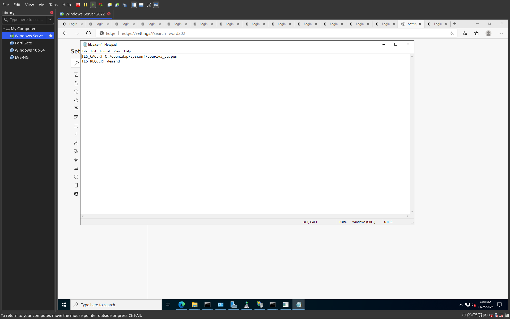
C:\openldap\sysconf\ldap.conf in Notepad. Live VM.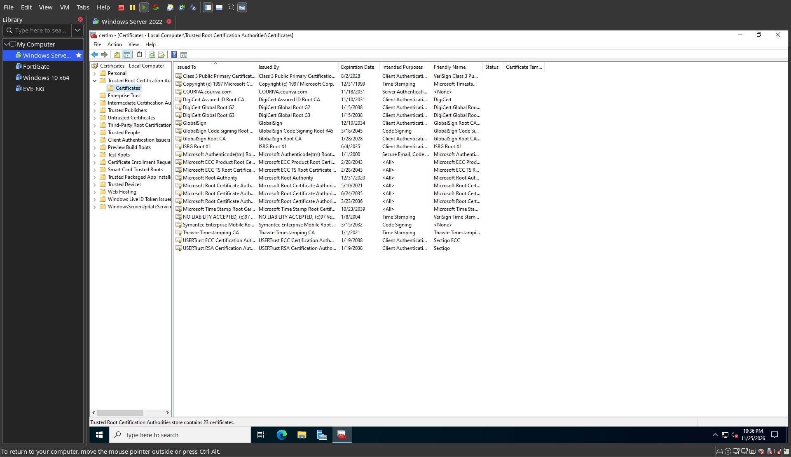
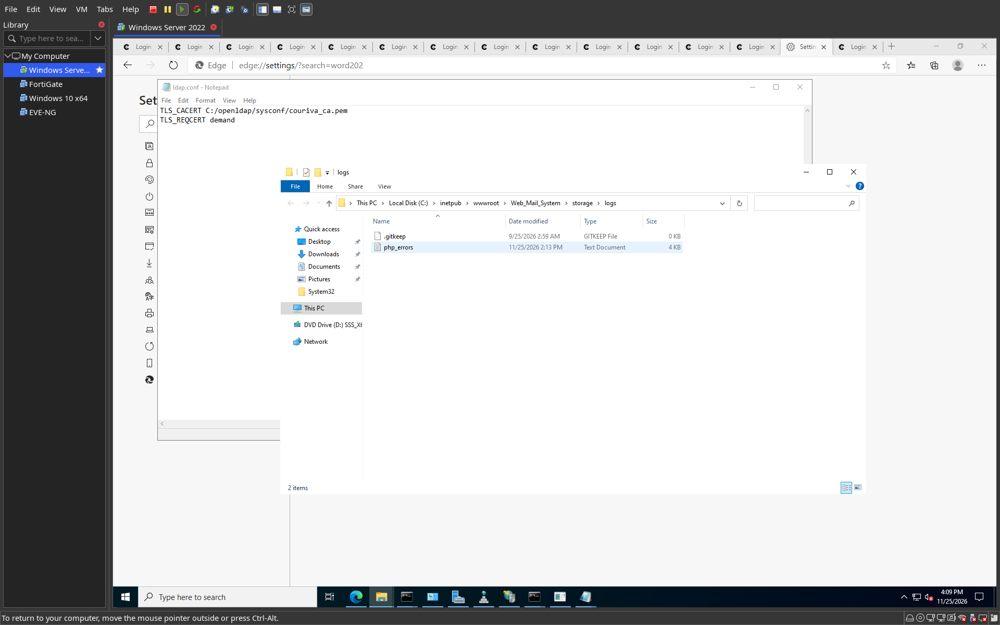
storage\logs in File Explorer. Live VM.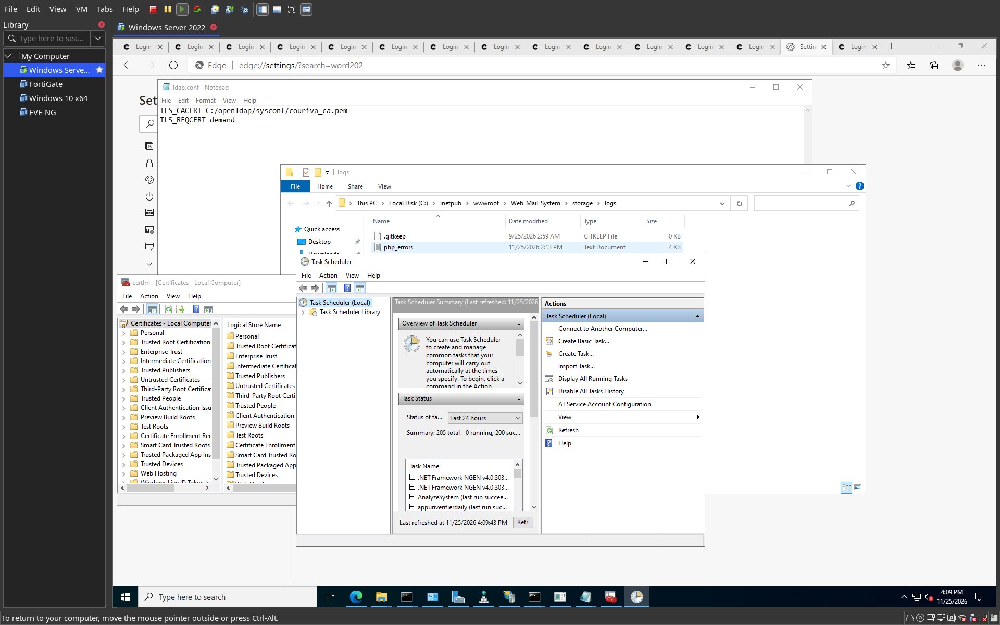
Couriva-ScheduledMailProcessor. Live VM.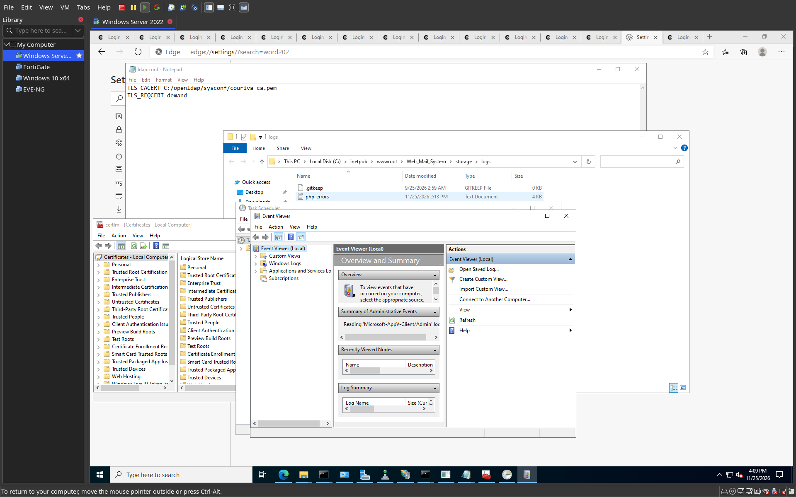
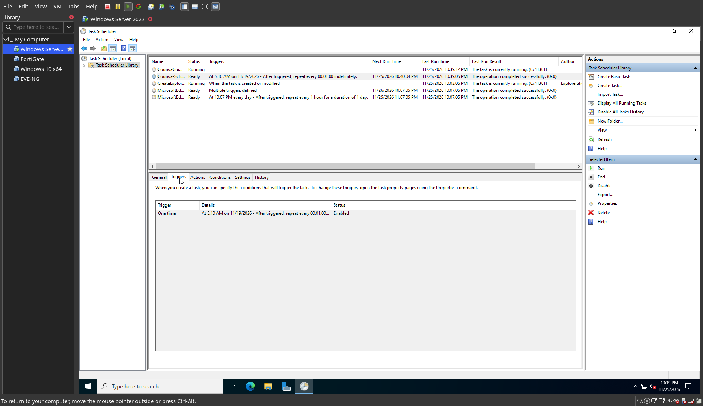
Couriva-ScheduledMailProcessor Triggers tab (every 00:01:00 indefinitely). Live VM.Couriva-ScheduledMailProcessor Actions tab (C:\PHP\php.exe -f ...\bin\process_scheduled.php). Live VM.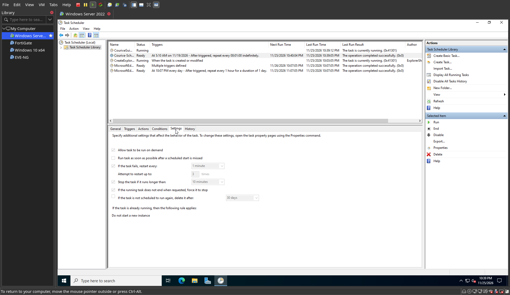
Couriva-ScheduledMailProcessor Settings tab (10 minutes limit, Do not start a new instance). Live VM.4.9 Hotspot runbook — 172.20.10.2
Files: bin\configure-hotspot-ip.bat (admin check, calls PowerShell with -IPAddress 172.20.10.2 -PrefixLength 28 -Gateway 172.20.10.1 -DNS 172.20.10.2) and bin\configure-hotspot-ip.ps1 (Figure 18).
| # | Action | Effect |
|---|---|---|
| 1 | Connect guest NIC to iPhone Personal Hotspot Wi‑Fi | adapter Up |
| 2 | Right-click configure-hotspot-ip.bat → Run as Administrator |
elevation check passes |
| 3 | PS script sets static 172.20.10.2/28, gateway 172.20.10.1, DNS 172.20.10.2,127.0.0.1,172.20.10.1,1.1.1.1 |
address on guest |
| 4 | Set-NetConnectionProfile -NetworkCategory Private |
inbound LAN traffic allowed |
| 5 | Firewall rules: TCP 80, TCP/UDP 443, UDP/TCP 53 | web + DNS open |
| 6 | DNS A records @,www,mail,couriva → 172.20.10.2; forwarders 172.20.10.1,1.1.1.1,8.8.8.8; cache clear |
name resolution |
| 7 | Ensure *:80 IIS binding; iisreset /restart |
site listening |
| 8 | On iPhone Safari open http://172.20.10.2/public/login.php |
login card |
Hotspot verification: after the host joined the iPhone hotspot (172.20.10.3/28, gateway 172.20.10.1), curl -s -o /dev/null -w '%{http_code} %{remote_ip}' http://172.20.10.2/public/login.php returned 200 172.20.10.2. Figures 39–40 are fresh captures of the login card at the defense URL at desktop and 430×932 mobile viewport. The iPhone Safari application itself was not driven from this host; the mobile capture is a browser at phone viewport. Figure 17 still shows both guest addresses: lab 172.20.10.2 and hotspot 172.20.10.2.
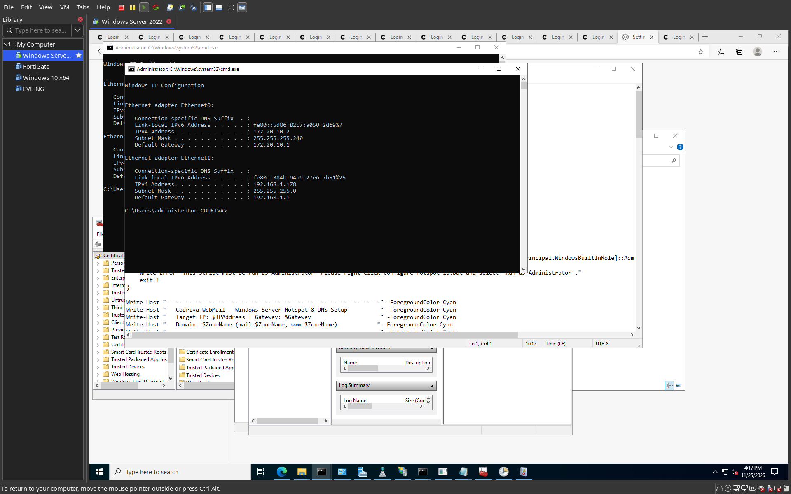
ipconfig — adapter addresses on the live guest.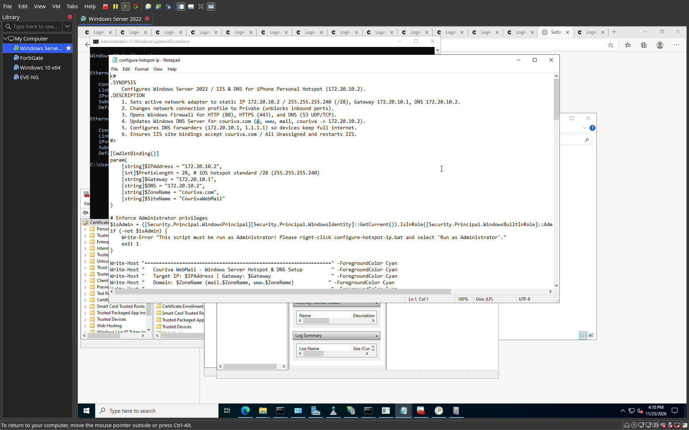
bin\configure-hotspot-ip.ps1 in Notepad. Live VM.
http://172.20.10.2/public/login.php — desktop capture after host joined hotspot. Verified http=200, remote_ip=172.20.10.2.
http://172.20.10.2/public/login.php — 430×932 mobile viewport capture (phone-sized browser, not the Safari app itself).Offline operation, DNS hostnames, and HTTPS rules
- 100% offline capable: All UI assets (
assets/css/,assets/js/,assets/brand/) are served locally, authentication uses local AD/LDAPS, and mail delivery is internal MariaDB-backed. No internet connection is required. - Access by domain name: With client DNS set to
172.20.10.2, the DNS zonecouriva.com(@,www,mail,couriva→172.20.10.2) and IIS wildcard bindings (*:80:,*:443:) servehttps://couriva.com/public/login.php,https://www.couriva.com/public/login.php, andhttps://mail.couriva.com/public/login.php. - When HTTPS is required vs. optional: The
Redirect HTTP to HTTPSrule inweb.config(andincludes/functions.php) redirects domain hostnames tohttps://(clients must trust the server/CA cert or accept the browser warning), while exempting172.20.10.*,192.168.*,10.*,localhost, and127.0.0.1sohttp://172.20.10.2/public/login.phpworks directly over HTTP.
4.10 Rollback
| Change | Rollback command |
|---|---|
| Static IP | Set-NetIPAddress -InterfaceAlias <nic> -AddressFamily IPv4 -PrefixPrefixLength 0 / re-enable DHCP: Set-NetIPInterface -InterfaceAlias <nic> -Dhcp Enabled |
| Firewall | Remove-NetFirewallRule -DisplayName "Couriva WebMail (HTTP 80)", etc. |
| DNS records | Set-DnsServerResourceRecord back to lab IP, or Remove-DnsServerResourceRecord |
| IIS binding | Remove-WebBinding -Name CourivaWebMail -Port 80 -IPAddress * (if added) |
| Profile | Set-NetConnectionProfile -NetworkCategory Public |
| Then | iisreset /restart; verify http://172.20.10.2/public/login.php → 200 |
No persisted rollback script was added; the commands above are the operator path.